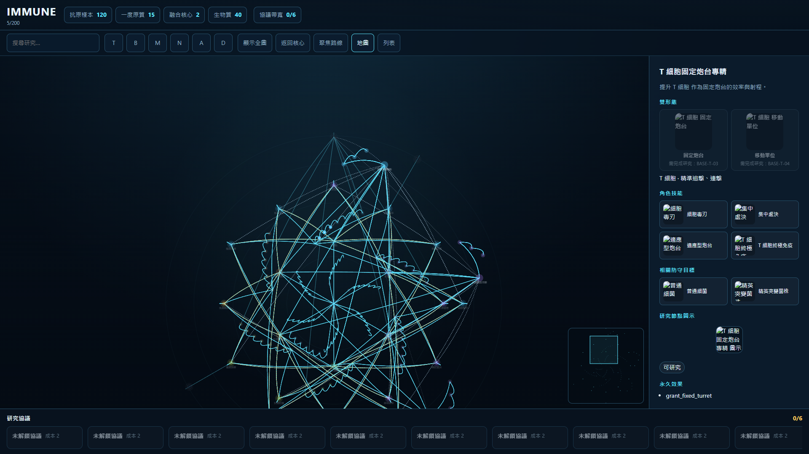
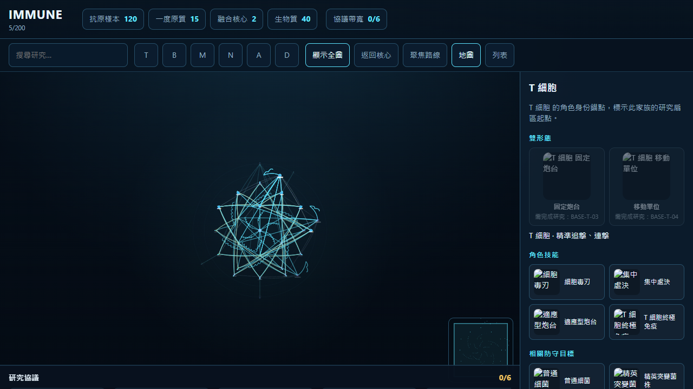
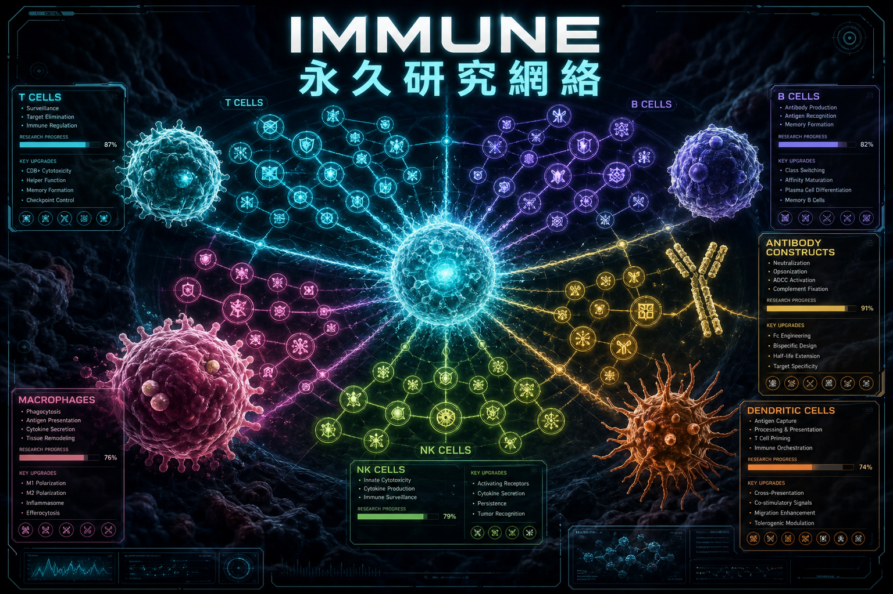

UX story — vertical slice




Stakeholder pack
Permanent research star map for the IMMUNE 3D immune-cell strategy game. Players spend 抗原樣本, 一度原質, 融合核心 and 生物質 to unlock 200 real nodes: identities, mobility, fusion, status chemistry, and Apex.

The live entry is ui/immune-research-network/index.html. Space = family sector. Shape/icon = research class. Ring + symbol = unlock state. Demo reveals 22 nodes and completes CORE-IMMUNE, T/B identity, BASE-T-01 and BASE-T-02. Selected start node: BASE-T-03 T 細胞固定炮台專精.
| Layer | Contents |
|---|---|
| Core | 免疫核心 — single origin, no cost |
| Inner rings | 6 universal techs × 7 + 7 status chemistry |
| Family ring | 6 bases × 8 exclusive researches + identity anchors |
| Pair ring | 15 dual-family fusions × (S1/S2/anchor/S4 protocol) |
| Outer rings | 6 triples + 3 hidden Apex + IMMUNE PRIME |
Win: toast「研究完成，永久進度已更新。」and newly revealed nodes glow. Fail: 研究 stays disabled; toast uses engine codes (missing_prerequisite, missing_resource, track_limit, bandwidth_exceeded).


| Control | Live behaviour |
|---|---|
| Drag empty map | Pan. Wheel/pinch zooms 0.35×–2.4× around cursor. |
| Click node | SELECT_NODE + route emphasis. Double-click character_anchor focuses 1.05×. |
| 顯示全圖 / 返回核心 / 聚焦路線 | fitAll · home 1500,1500 @0.55× · focus selected |
| 追蹤 / F | Max 3. Gold stroke + 追蹤中 chip. Hidden nodes cannot be tracked. |
| 研究 / R | Only eligibility=ready. Deducts costs, completes, reveals next. |
| 地圖 / 列表 | List groups by ring; hidden names stay 未知. Minimap hidden in list. |
| 搜尋 / family chips | Search never leaks hidden names. Filters dim nodes, never rearrange. |
| 研究協議 | Cost 1 / core 2 / Apex 3. One Apex. Bandwidth starts at 6, later 10. 裝備 / 卸下 free out of battle. |
| LOD | 0.35–0.55 anchors only · 0.56–1.0 nodes · 1.01–1.6 names · 1.61+ costs |
Status chemistry (7): 標記 · 抗體 · 腐蝕 · 緩速 · 感染 · 鏈鎖 · 暴擊. Universals (6×7): 防守工程 · 遠征探索 · 全面戰爭 · 細胞機動 · 融合工程 · 生存修復.
| Band | Target | Notes from spec + demo |
|---|---|---|
| Vertical slice | 18–24 revealed, 2–4 unlocks / 15–20 min | Live demo: 22 revealed, 5 completed, antigen 120 / protomass 15 / fusion 2 / biomass 40 |
| Main 4–6h | ~45–60 completed | Family exclusives + first pair S2 |
| Full 15–25h | ~130–160 discovered | Triples + Apex gates. 200/200 is mastery, not required |
| Track limit | 3 | System shows prereqs + total cost; never auto-buys |
| Protocols | 6 → 10 bandwidth | Normal 1 · core 2 · Apex 3 · one Apex per mission |


Demo: http://127.0.0.1:5180/ui/immune-research-network/
21:9 board: docs/ux-wireframe.html · Manager: docs/manager-overview.html
Recapture HUD: PORT=5180 npm run serve then PORT=5180 npm run docs
Posters only: PORT=5180 npm run docs:posters
Validate: bash .agents/skills/overview-pack/scripts/validate-overview-pack.sh